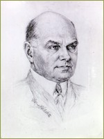
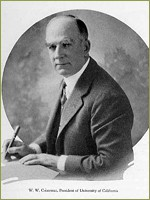

The Langley Porter Reforms

During the 1920s, the Medical School had gone virtually leaderless during the many years of uncertain negotiations with the General Education Board. After Herbert Moffitt's retirement from the deanship following World War I, the office was filled only briefly by George Whipple before his departure for Rochester in 1921. President Barrows served as acting dean from 1921-1923, and Lionel Schmitt, director of the University Hospital, served as acting dean for the next four years. Dr. Langley Porter
On December 13, 1927, President Campbell presented a plan to the Regents asking that the popular San Francisco physician Dr. R. Langley Porter be brought out of retirement to lead the medical school in a program of reform. The Regents quickly approved Porter's appointment and President Campbell enhanced the new dean's authority by mandating that the advisory board of the medical school should advise the University president through the dean's office. Heads of finance and appointees in the school were ordered to report to the dean rather than the president, and in the future the dean would serve as the sole representative of the president of the University to the faculty, students, and nurses.

One of Campbell's primary concerns as he recruited Langley Porter was the need to reorganize a curriculum that suffered gaps and duplication due to the geographical separation between east and west bay instruction. The new dean shared his concerns. Upon his arrival in the summer of 1927 Dean Porter did a quick survey and described the medical school as "a disintegrated institution," with special weakness in the second-year teaching of the clinical sciences of bacteriology and pharmacology. He proposed that the second year of preclinical science teaching be brought back to San Francisco and received immediate regential approval for the move. In 1928, Pharmacologist Chauncey Leake was recruited from a first rate department at Wisconsin. In early 1928, the Departments of Bacteriology and Pharmacology were transferred from Berkeley to new labs outfitted on the third floor of the medical school building.
University President William Campbell

The pathology lab in old medical school building
On the clinical side at San Francisco, Dean Porter appointed full-time professors to head medicine (William J. Kerr) and Surgery (Howard Naffziger). By the end of the decade, with an effective new Dean in office and a Board of Regents committed to reform, President Campbell addressed the campus community with optimism, announcing that "it is confidently hoped that the wise administration of the medical school and the devoted service and splendid abilities of the dean and the faculty of the school, will in due time cause our medical school to take its place in the front rank of the world's greatest service institutions." A new university president, Robert G. Sproul, succeeded Campbell in 1930, and he soon proved to be a strong supporter of coordination of all the health professions at Parnassus. Although financial limitations put further consolidation plans on hold throughout the Depression, Dean Porter persisted in his ambitious vision for a merged medical center at Parnassus. Ultimately his program of reform would influence the development of the Colleges of Dentistry and Pharmacy by coalescing training in the clinical sciences of bacteriology, pathology and pharmacology into curriculum for all the health professions at Parnassus.
>> The Preclinical Sciences at Berkeley
{% include footer.html %}